速览
常有人说「游戏软件不贵吗？」——先声明这完全是他个人的见解，樱井认为相当便宜。作为一个成年人的感觉，能投入这么多时间的东西用这个价格提供，很少见；当然各国感觉不同。特别是日本电影票贵：为了聚会吃饭、喝酒、看剧、看电影、赌博、兜风、旅行、住酒店、到处吃……做什么都要大把花钱。相比之下，游戏能玩几十个小时，3A 大作也不到 1 万日元；小规模的在 1000 日元档，社交游戏等甚至免费——果然便宜。最重要的是，他很清楚每一款游戏背后都凝结着团队与项目：游戏的规模和制作物比起过去变大了几十、几百倍，整体价格却没涨那么多；光是做游戏就要养相当多的员工，宣传和销售也要花大钱。意识到这些，就不得不觉得游戏便宜。然而近年出现了更便宜划算的娱乐——正是订阅服务：这么多东西随便看。对消费者是好时代，对制作者呢？既有确保制作成本的喜悦，也有与过去作品一起竞争的痛苦吧。订阅不只限于影视，游戏也有。但是没人玩的游戏即使免费也没人玩。真心想玩的、想支持的作品，就毫不犹豫地购买，若是订阅就去玩它，支持制作吧。
1. 游戏其实很便宜 0:02
常有人说「游戏软件不贵吗？」——先声明这是个人见解，樱井认为相当便宜。
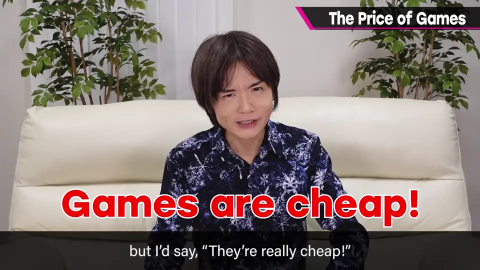
作为成年人的感觉，能投入这么多时间的东西用这个价格提供，很少见；当然各国感觉不同。
2. 与其他娱乐比较 0:32
特别是日本电影票贵；聚餐、喝酒、看剧、看电影、赌博、兜风、旅行、住酒店、到处吃……做什么都要大把花钱。
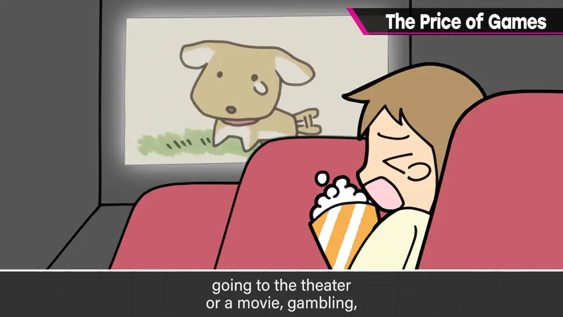
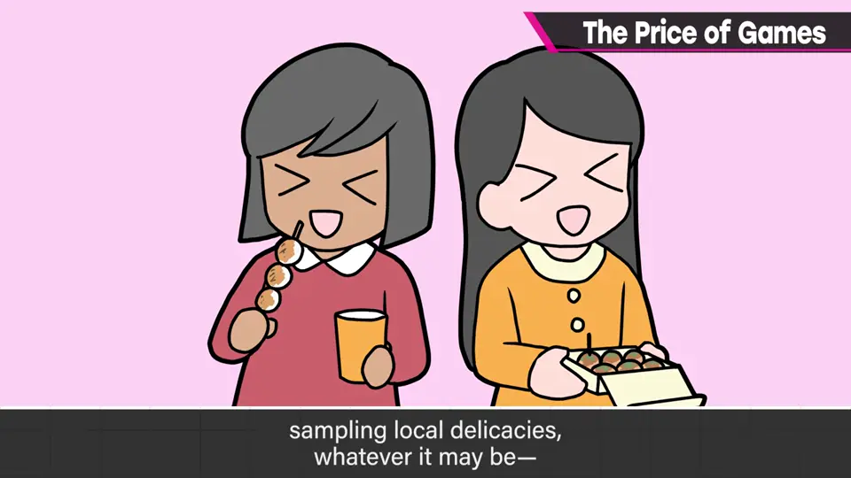
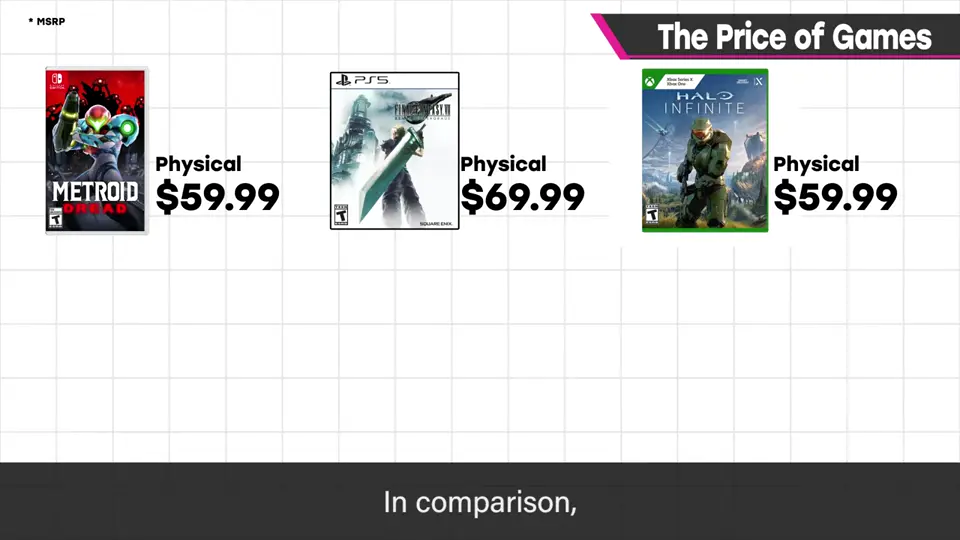
小规模作品在 1000 日元档，社交游戏等甚至免费——果然便宜。
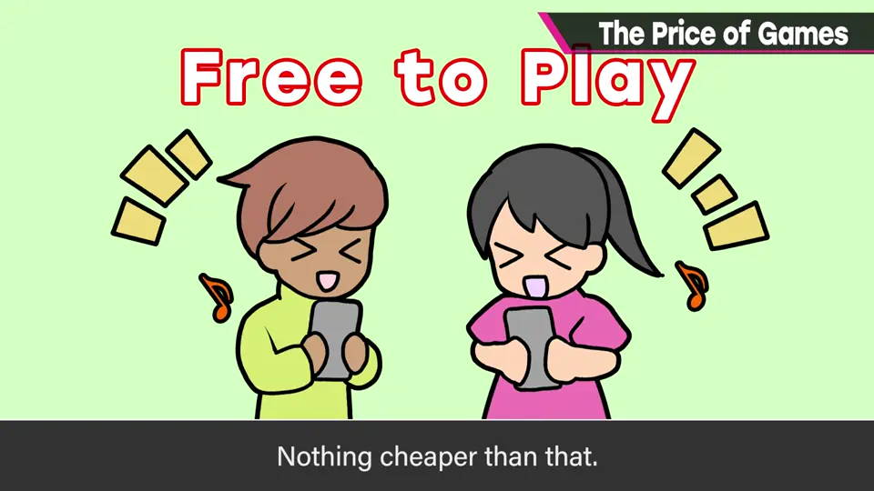
3. 游戏背后的成本 1:10
他很清楚每一款游戏背后都凝结着团队与项目。
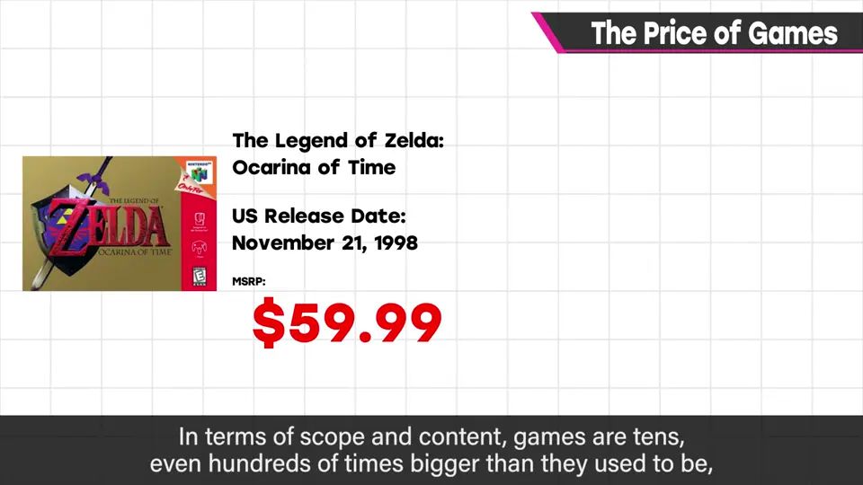
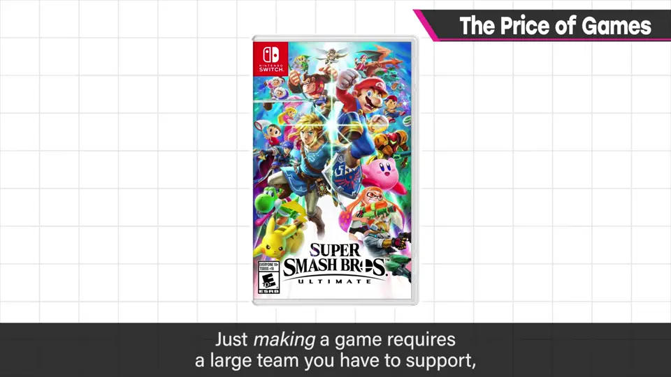
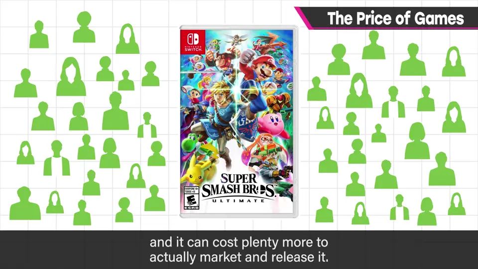
4. 订阅时代 1:48
近年出现了更便宜划算的娱乐——订阅服务：这么多东西随便看。
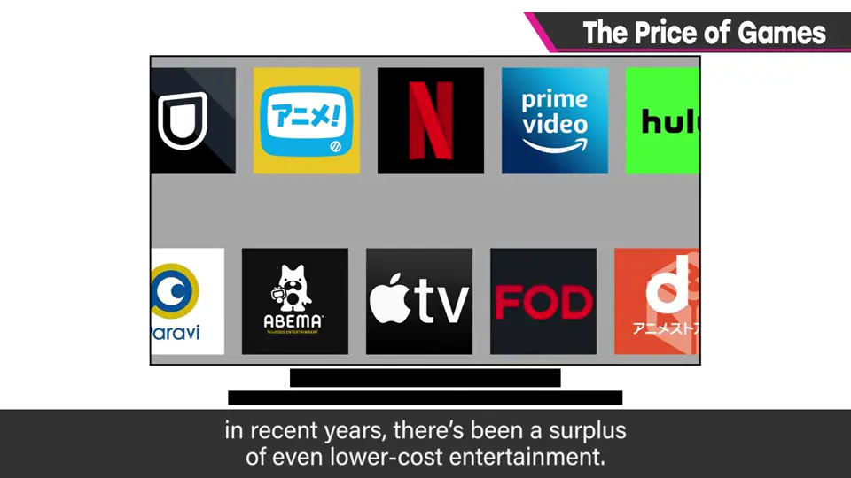
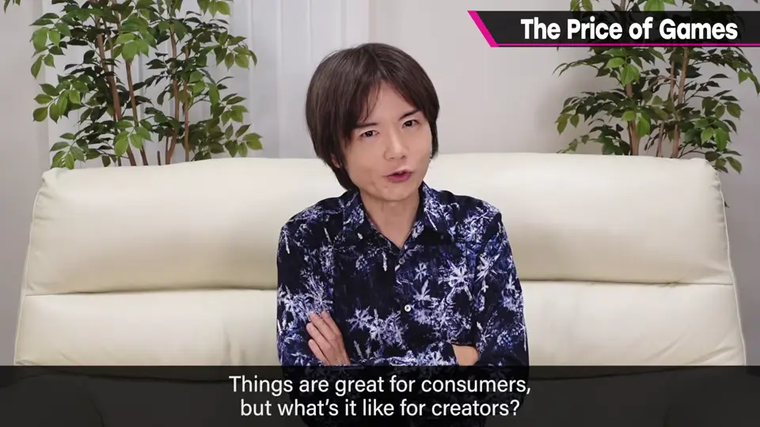
对消费者是好时代；对制作者，既有确保制作成本的喜悦，也有与过去作品一起竞争的痛苦。
订阅不只限于影视，游戏也有。
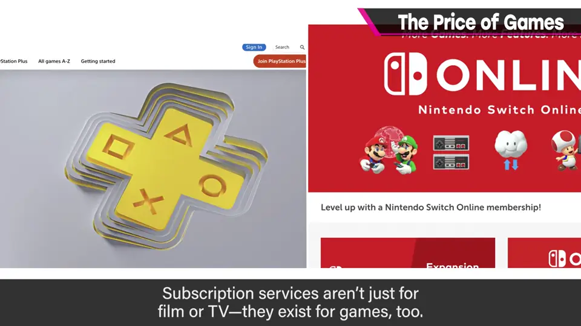
5. 支持你想支持的 2:22
自测题
1. 樱井为什么认为游戏便宜？
能玩几十小时而 3A 也不到 1 万日元，且规模比过去大几十几百倍价格却没怎么涨。 0:56
2. 订阅服务对制作者意味着什么？
既能确保制作成本，也要和过去作品一起竞争。 2:06
3. 他最后呼吁玩家做什么？
对想玩、想支持的作品毫不犹豫地购买或在订阅中游玩，支持制作。 2:25